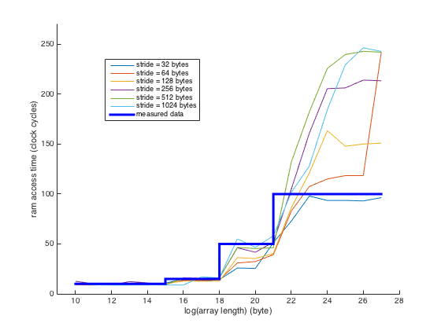
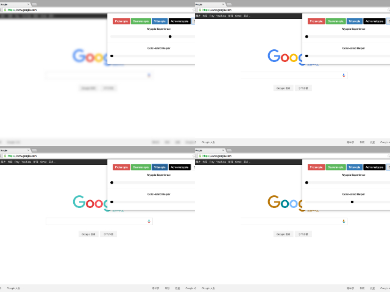

OS X EI Capitan Micro Benchmarking
Description
This project is the course project for CSE221. The purpose of this project is to measure the performance for a machine with the given hardware. It is also meaningful to analyze how this performance affects the software services. To achieve these two goals, we used the C programming language to implement a series of experiments. The compiler version is GCC 4.2.1 nearly without any optimization settings (compiled with “-O0”). The only optimization is to unroll all the loops by compiling with “-funroll-all-loops”. When performing all the experiments, we turned off the hardware multithreading and limited the number of active processor cores to one. We also gave the highest priority when running our program. This can be obtained by typing “sudo nice -20 ./prog” in the terminal, when we were running the program “prog”.

Member
Qian Wang, Junxia Zhuge & Xiangyu Wang
Final Report
Eye: Color-Blind Friendly Chrome Extension
Description
According to the references, there are nearly 6% people suffering from color-blindness nowadays. What's more, it is obvious that teenagers in an increasing number are getting near-sighted. The health of eyes is becoming a more and more serious issue in our daily lives. However, the design of many websites is not completely friendly to these people. Our main purpose is to further improve their browsing experience. Meanwhile, the users can also raise their consciousness of caring the color-blindness and preventing the near-sight by trying directly through our project.

Member
Qian Wang, Danyang Zhang, Zhenchao Gan & Junxia Zhuge